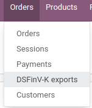

德国¶
German Chart of Accounts¶
The chart of accounts SKR03 and SKR04 are both supported in Odoo. You can choose the one you want by going in then choose the package you want in the Fiscal Localization section.
Be careful, you can only change the accounting package as long as you have not created any accounting entry.
小技巧
创建Odoo线上版数据库时，默认安装SKR03。
German Accounting Reports¶
Here is the list of German-specific reports available on Odoo Enterprise:
资产负债表
损益
Tax Report (Umsatzsteuervoranmeldung)
合作伙伴增值税内
导出从Odoo到Datev¶
It is possible to export your accounting entries from Odoo to Datev. To be able to use this feature, the german accounting localization needs to be installed on your Odoo Enterprise database. Then you can go in then click on the Export Datev (csv) button.
德国销售点：技术安全系统¶
** Kassensicherungsverordnung** 规定，电子记录保存系统（包括 POS 系统）必须配备 技术安全系统**（也称为 **TSS 或 TSE）。
Odoo提供了一项在“fiskaly <https://fiskaly.com>”的帮助下兼容的服务，这是一种基于云的解决方案*。
重要
由于此解决方案是基于云的，因此需要有效的互联网连接。
注解
唯一允许的增值税税率由 fiskaly 给出。您可以通过咨询以下方式查看这些税率：“fiskaly DSFinV-K API：VAT Definition <https://developer.fiskaly.com/api/dsfinvk/v0/#tag/VAT-Definition>`_。
配置¶
模块安装¶
如果您的数据库是在 2021 年 6 月之前创建的，则 ：ref：
upgrade <general/upgrade>您的 售 应用（point_of_sale）和 Restaurant 模块（pos_restaurant）。：ref：“安装<一般/安装>” 国 - 销售点认 （“l10n_de_pos_cert”）和 国 - 餐厅类型销售点认 （“l10n_de_pos_res_cert”）模块。
小技巧
如果未列出这些模块，则 ：ref：
更新应用列表<一般/安装>。

在金融管理局注册您的公司¶
要注册您的公司，请转到：菜单选择：“设置”–>常规设置–>公司–>更新信息“，填写以下字段并*保存*。
公司名称
增值税号码
St.-Nr （Steuernummer）：此编号由税务局分配给每个应税自然人或法人。（例如，“2893081508152”）
W-IdNr**（Wirtschafts-Identifikationsnummer）：这个数字被用作经济活跃人士的永久识别号码。
然后，您可以通过打开*fiskaly*选项卡并单击*fiskaly注册*按钮，通过fiskaly **册您的公司。

小技巧
如果您没有看到*fiskaly注册*按钮，请确保您*保存*了您的公司详细信息，并且不再处于*编辑模式*。
注册完成后，将显示新字段：
fiskaly 组织 ID 是指贵公司在 fiskaly 端的 ID。
fiskaly API 密 和 secret 是系统用于访问 fiskaly 提供的服务的凭据。

注解
如果当前凭据存在任何问题，则可以请求新凭据。
创建技术安全系统并将其链接到您的 PoS¶
要在德国使用您的销售点，您首先必须为其创建一个：abbr：TSS（技术安全系统）。
为此，请转到：menuselection：销售点-->配置-->销售点，打开要编辑的销售点，然后选中 **建TSS ***保存*旁边的框。

成功创建 TSS 后，您可以在 fiskaly API 部分下找到您的 TSS ID 和 户端 ID。
TSS ID 是指您的 TSS 在 fiskaly 一侧的 ID。
客户端 ID 是指您的 PoS，但在 fiskaly 的一侧。
DSFinV-K¶
每当您关闭PoS会话时，订单的详细信息都会发送到fiskaly的：abbr：’DSFinV-K（Digitale Schnittstelle der Finanzverwaltung für Kassensysteme）’服务。
在审计的情况下，您可以通过转到：menuselection：`销售点–>订单–>DSFinV-k导出`来导出发送到DSFinV-K的数据。
这些字段是必填字段：
名称
开始日期 （导出日期大于或等于给定开始日期的数据）
结束日期时 （导出日期小于或等于给定结束日期的数据）
如果要导出所有销售点的数据，请将“销售点”字段留空。如果您只想导出此特定 PoS 的数据，请指定销售点。
DSFinV-K 导出的创建会在 fiskaly 的导出时触发。

德国税务会计准则：Odoo 的 GoBD 合规指南¶
GoBD stands for Grundsätze zur ordnungsmäßigen Führung und Aufbewahrung von Büchern, Aufzeichnungen und Unterlagen in elektronischer Form sowie zum Datenzugriff. In short, it is a guideline for the proper management and storage of books, records, and documents in electronic form, as well as for data access, that is relevant for the German tax authority, tax declaration, and balance sheet.
这些原则已由联邦财政部（BMF）于2014年11月撰写并发布。自2015年1月以来， 们已成为常 ，并取代了以前接受的与基于计算机的会计相关的做法。BMF在2019年和2020年1月进行了一些更改，以指定一些内容，并且由于数字解决方案（云托管，无纸化公司等）的发展。
重要
Odoo为您提供了符合GoBD **方法。
在依赖会计软件时，您需要了解GoBD的哪些信息？¶
注解
If you can, the best way to understand GoBD is to Read the Official GoBD text. It is a bit long but quite readable for non-experts. But in short, here is what to expect:
GoBD对必须向金融当局提交账户的公司具有约束力，其中包括中小企业，自由职业者和企业 。因此， 税人本人对完整和详尽地保存财政相关数据（上述财务和相关数据）负有唯一责 。
除软件要求外，用户还需要确保内部控制系统（根据《财政法》第146条）：
访问权限控制;
职责分离，职能分离;
输入控件（错误通知、合理性检查）;
数据输入时的对账检查;
处理控制;
防止有意或无意地操纵软件、数据或文档的措施。
用户必须将组织内的任务分发到相关位置（控制），并验证任务是否正确和完整地执行（监督）。必须记录这些控制的结果（文档），如果在这些控制期间发现错误，则应采取适当的措施来纠正这种情况（预防）。
数据安全性如何？¶
纳税人必须确保系统不会因删除、移除或盗窃任何数据而造成任何数据丢失 。如果条目没有得到充分保护，记账将被视为不符合GoBD指南。
预订最终发布后，将无法再通过应用程序进行更改或删除。
如果在云端使用Odoo，则提供定期备份服务。此外，可以在外部系统下载和备份定期备份数据。
如果服务器在本地运行，则用户有责任创建必要的备份基础结构。
重要
在某些情况下，数据必须保留十年或更长时间，因此始终保存备份。如果您决定更换软件提供商，则更为重要。
软件编辑的责任¶
考虑到GoBD仅适用于纳税人和金融机构之间， 件编辑绝不对其用户的金融交易数据的准确和合规文档负 。它只能为用户提供必要的工具，以遵守GoBD中描述的软件相关指南。
Odoo如何帮助您实现合规性？¶
当涉及到GoBD时，关键词是： 追溯，可验证，真实，清晰和连 。简而言之，您需要有防审计存档，Odoo为您提供了实现所有这些目标的方法：
- 追溯性和可验证Odoo中的每条记录都印有文档的创建者，创建日期，修改日期以及修改者。此外，跟踪相关字段，因此可以在相关对象的聊天中看到谁更改了哪个值。
- 完整性所有财务数据都必须记录在系统中，并且不能有间隙。Odoo确保金融交易的编号没有差距。用户有责任对系统中的所有财务数据进行编码。由于Odoo中的大多数财务数据都是自动生成的，因此用户有责任完全编码所有供应商账单和杂项操作。
- 价格准确性Odoo通过正确的配置确保使用正确的帐户。此外，采购订单和销售订单之间的控制机制及其各自的开票反映了业务现实。用户有责任扫描纸质供应商账单并将其附加到Odoo中的相应记录中。Odoo文档可帮助您自动执行此任务。
- 及时预订和记录保存由于Odoo中的大多数财务数据都是由交易对象生成的（例如，开票是在确认时记账的），Odoo确保开箱即用的及时记录保存。用户有责任及时对所有传入的供应商账单以及杂项操作进行编码。
- 订购存储在Odoo中的财务数据是按定义排序的，可以根据模型中的大多数字段重新排序。GoBD不强制执行特定的排序，但系统必须确保第三方专家可以快速找到给定的金融交易。Odoo确保了这种开箱即用。
- 不变性散列通过德语Odoo本地化，Odoo的标准配置方式是，无需任何进一步的自定义即可遵守不可更改性子句。
您是否需要 GoBD-导出？¶
在财政控制的情况下，财政当局可以请求对会计系统的三个级别的访问（Z1，Z2，Z3）。这些级别从直接访问接口到在存储设备上移交财务数据不等。
如果在存储设备上移交财务数据，则 GoBD 强制执行该格式。例如，它可以是XLS，CSV，XML，Lotus 123，SAP格式，AS / 400格式或其他格式。Odoo支持开箱即用的CSV和XLS财务数据导出。GoBD **议 **特定的基于XML的GoBD格式导出（参见“Ergänzende Informationen zur Datenntträgerüberlassung”§3），但它没有绑定。
合规认证的作用和含义是什么？¶
GoBD明确指出，由于最先进的会计软件的性质，其配置可能性，不断变化的性质以及各种使用形式， 能给予任何具有法律约束力的认 ，也不能使该软件对公共机构负责。第三方证书确实可以为客户做出软件购买决策提供信息价值，但绝不具有法律约束力或任何其他法律价值（A. 12， § 181）。
GoBD证书只规定，如果您根据其指南使用该软件，该软件不会阻止您尊重GoBD。 这些认证在时间和成本方面非常昂贵，其价值是相对的。因此，我们专注于确保GoBD合规性，而不是为营销工具付费，但是，这种营销工具不会为我们的客户提供任何法律确定性。
重要
The BMF actually states the following in the Official GoBD text:
180. Positive attestations on the correctness of the bookkeeping - and thus on the correctness of IT-based bookkeeping systems - are not issued either in the context of a tax field audit or in the context of binding information.
181. “Certificates” or “attestations” from third parties can serve as a decision criterion for the company when selecting a software product, but develop from the in margin no. 179 is not binding on the tax authorities.
注解
之前的内容是“使用Google翻译自动从德语翻译<https://translate.google.com/?sl=de&tl=en&text=180。%0APositivtestate%20zur%20Ordnungsm%C3%A4%C3%9Figkeit%20der%20Buchf%C3%BChrung%20-%20und%20damit%20zur%20Ordnungsm%C3%A4%C3%9Figkeit%20DV-gest%C3%BCtzter%20Buchf%C3%BChrungssysteme%20-%20werden%20weder%20im%20Rahmen%20einer%20steuerlichen%20Au%C3%9 Fenpr%C3%BCfung%20noch%20im%20Rahmen%20einer%20verbindlichen%20Auskunft%20erteilt.%0A%0A181.%0A%E2%80%9EZertifikate%E2%80%9C%20oder%20%E2%80%9ETestate%E2%80%9C%20Dritter%20k%C3%B6nnen%20bei%20der%20Auswahl%20eines%20Softwareproduktes%20dem%20Unternehmen%20als%20Entscheidungskriterium%20dienen%2C%20entfalten%20jedoch%20aus%20den%20in%20Rz.%20179%20genannten%20Gr%C3%BCnden%20gegen%C3%BCber%20der%20Finanzbeh%C3%B6rde%20keine%20Bindungswirkung.%20&op=translate>`_.
如果您不合规，会发生什么情况？¶
如果发生侵权行为，您可以处以罚款，但也可以期待法院命令，要求实施具体措施。